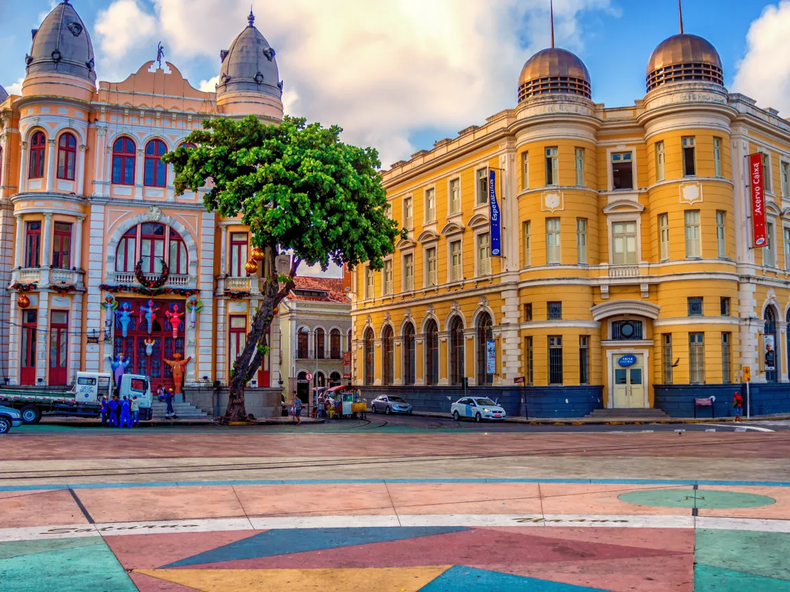
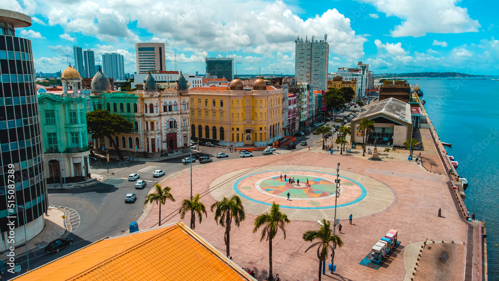

O Coração da Cidade: Marco Zero

A Praça Rio Branco, popularmente conhecida como Marco Zero, é um dos pontos turísticos mais emblemáticos da cidade do Recife. Localizada no Bairro do Recife, ela marca o local onde a cidade nasceu.
No centro da praça, encontra-se a Rosa dos Ventos do artista Cícero Dias, um painel colorido que dá vida ao chão do porto. Dali, é possível observar o Parque das Esculturas de Francisco Brennand, situado logo à frente, do outro lado do Rio Capibaribe.
Este é um ponto de encontro obrigatório para quem deseja sentir a energia cultural de Pernambuco, especialmente durante o Carnaval, quando a praça se torna um dos principais palcos da folia.
